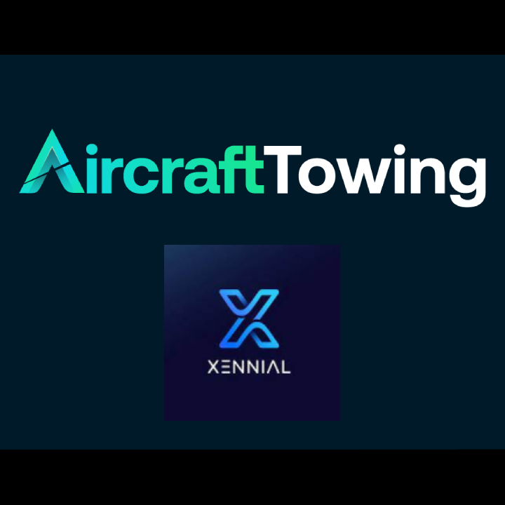

VR / Simulación · 2022–2023
Aircraft Towing VR
Simulación VR de remolque de aeronaves con validaciones de posición, ángulo y velocidad.

Contexto
Simulación inmersiva orientada a procedimientos de remolque de aeronaves.
Reto
Traducir reglas espaciales y de seguridad a una interacción comprensible dentro de VR.
Aporte
Implementación de validaciones de ángulo, velocidad y posición; feedback de usuario y lógica de interacción en Unity para Meta Quest.
Pendientes
TODO: asset: captura panorámica principal, captura de maniobra y diagrama opcional de validaciones.